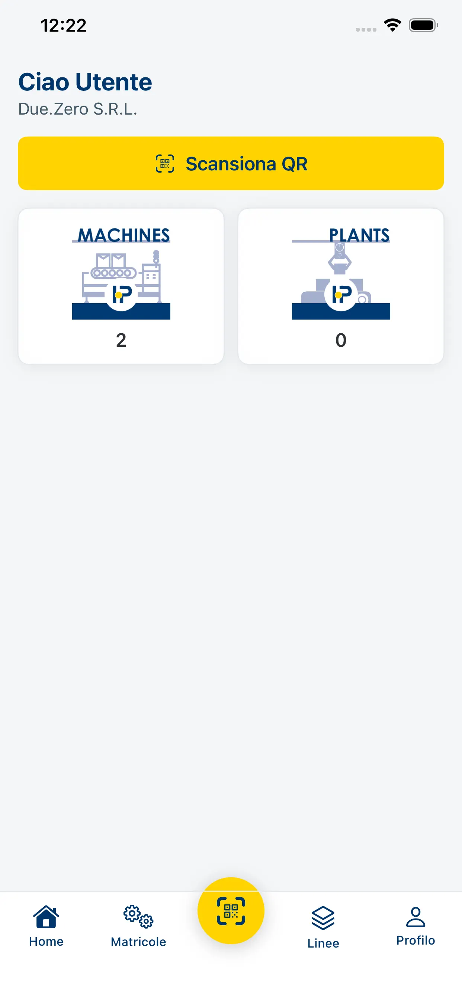
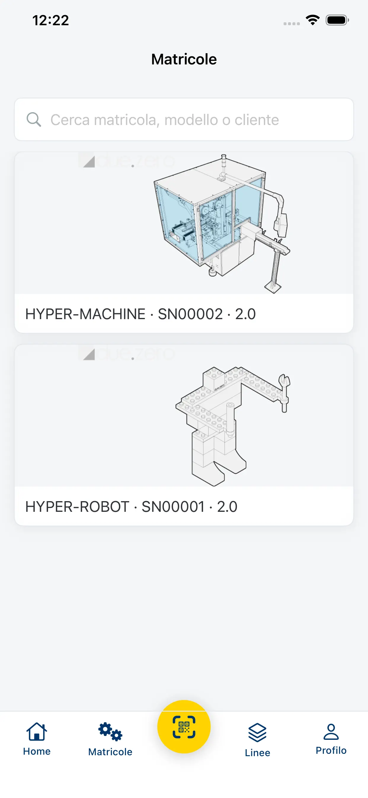
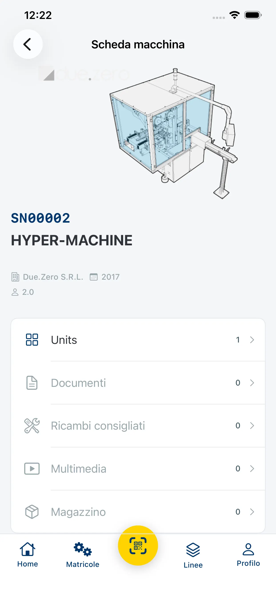
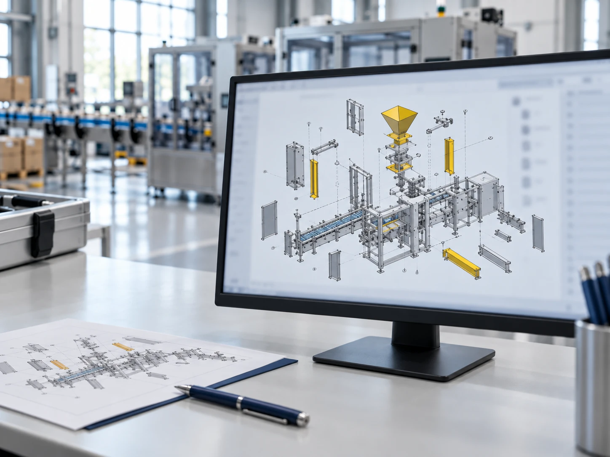

Capitolo 1 | Come si vede
Dalla macchina al ricambio
Inquadra il QR
Il tecnico è davanti alla macchina. Con l’app inquadra il QR e la riconosce, anche senza rete.
Apre la matricola
Ogni macchina ha la sua scheda, con il disegno e i dati di quella matricola.
Trova quello che serve
Documenti, video, ricambi consigliati e disponibilità a magazzino, nello stesso posto.



Schermate provvisorie dall’App Store, con dati dimostrativi.
Capitolo 2 | A chi serve
Cosa cambia per te
| Ruolo | Oggi | Con Hyper.Parts |
|---|---|---|
| Se segui ricambi e post-vendita | Ti chiamano o ti scrivono e descrivono il pezzo a parole: tocca a te risalire al codice incrociando distinta e disegno. | Il cliente trova il pezzo sul disegno della sua matricola e ordina il codice giusto. |
| Se sei un tecnico in campo | In reparto servono manuali e schemi, e spesso la rete non arriva. | Inquadri il QR sulla macchina e l’app apre tavole e documenti, anche offline. |
| Se costruisci macchine | Cataloghi PDF da aggiornare e listini da gestire cliente per cliente. | Tavole legate alla matricola, listini multivaluta, ricarichi e disponibilità in un unico posto. |
| Se pianifichi la manutenzione | Lo storico dei ricambi ordinati è sparso tra email e gestionale. | Report sui componenti più soggetti a usura, per programmare gli interventi. |
Capitolo 3 | Come funziona
Come funziona
Un servizio gestito: il catalogo lo prepara Due.Zero insieme al costruttore.
Passo 1
La richiesta
Il costruttore consegna a Due.Zero disegni CAD, distinte base e documentazione tecnica delle macchine.
Passo 2

Il catalogo costruito insieme
Il team tecnico di Due.Zero prepara le tavole interattive secondo la codifica del costruttore.
Passo 3
La crescita
Il costruttore abilita clienti e rivenditori, ciascuno con la propria area. Macchine e documenti si aggiungono nel tempo.
Capitolo 4 | Domande
Cosa serve sapere
- Come si ottiene l’accesso?
- L’accesso è riservato: le credenziali le fornisce il costruttore della macchina, oppure si richiede dalla pagina di accesso.
- Cosa si trova per ogni macchina?
- Le tavole ricambi legate alla matricola, i documenti, i video, i ricambi consigliati e la disponibilità a magazzino.
- Serve la rete?
- Il QR sulla macchina apre tavole e documenti dall’app, anche offline.
- Da quali dispositivi si usa?
- Da browser e dall’app, per iPhone e Android.
Capitolo 5 | Due.Zero
Hyper.Parts è di Due.Zero: dal 2008, a Bologna, l’ufficio tecnico documentazione che affianca l’industria manifatturiera.
duezero.euCapitolo 6 | Contatti
Vuoi attivare Hyper.Parts?
Parliamo dei vostri ricambi.
L’accesso è riservato: le credenziali le fornisce il costruttore della macchina.
Parla con noi [+]